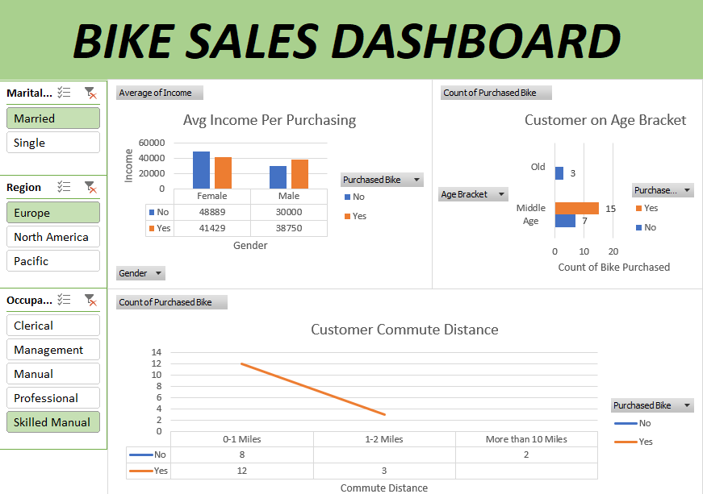
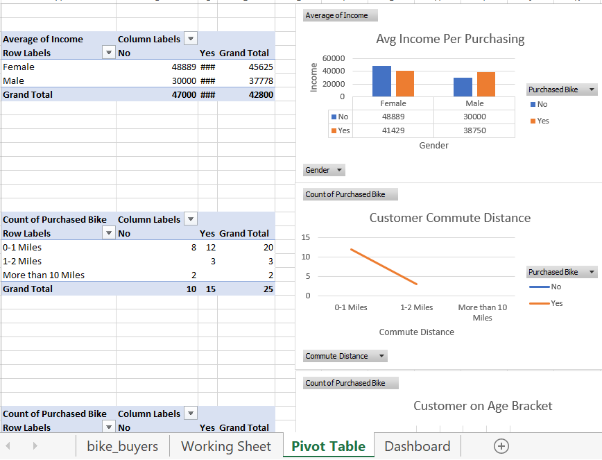

Excel Bike Sales Dashboard — Full Case Study
Overview
This Excel dashboard analyzes bike customer demographics, purchasing behavior,
income groups, commute distance, and age brackets. Pivot tables were used to segment
and interpret insights that help businesses improve targeted marketing and customer profiling.
Dashboard File
📊 View Excel Dashboard File
Dataset
Bike Sales Dashboard.xlsx
Dashboard Preview

Pivot Table Analysis

- Income levels strongly correlate with bike purchasing decisions.
- Middle-aged groups show the highest likelihood of buying a bike.
- Commute distance influences the probability of purchasing a bike.
- Customers in Europe and North America form major buying segments.
Objectives
- Analyze demographic factors influencing bike purchases.
- Identify customer groups with the highest conversion rates.
- Use pivot tables to uncover patterns across income, age, distance, and region.
- Visualize insights through clean and intuitive Excel dashboards.
Methodology
- Cleaned and structured raw customer dataset.
- Built multiple Pivot Tables for gender, income, commute distance, and purchase behavior.
- Designed Excel charts for dashboard visualization.
- Used slicers for dynamic filtering.
- Validated all calculations for data accuracy.
Conclusion
The Excel Bike Sales Dashboard demonstrates how effective data segmentation can uncover
customer purchasing patterns. These insights help businesses target the right demographic,
understand market demand, and optimize product marketing strategies.